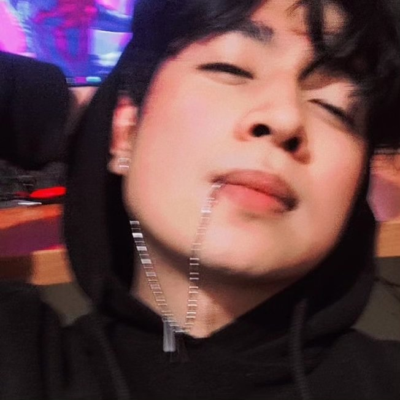

Emmanuel Galeana Letras
Técnico Especialista en Reparación de Hardware y Software
Puebla, Puebla | 249-128-7870 | manegupi2002@gmail.com
Técnico en Soporte y Mantenimiento de Equipo de Cómputo con experiencia práctica desde 2021, enfocado de lleno en el servicio técnico desde mayo de 2025. Combino mis estudios en Ciencias de la Computación con el trabajo constante de campo en diagnóstico, reparación y mantenimiento a equipos de cómputo y celulares. Me caracterizo por ser una persona responsable, con buena atención al detalle en el manejo y reemplazo de componentes electrónicos. Trabajo de forma metódica para solucionar problemas de hardware y software, buscando siempre realizar un trabajo bien hecho, con enfoque en la calidad y en entregar equipos totalmente funcionales a los clientes.
Experiencia Profesional
Técnico Especialista en Reparación y Soporte IT
- Diagnóstico y Mantenimiento de Hardware: Ejecución de mantenimiento preventivo y correctivo a equipos de cómputo y smartphones. Especialista en la sustitución de pantallas LCD, baterías, módulos de cámara y cables flex para marcas líderes del mercado.
- Reemplazo de Componentes y Soldadura Básica: Uso de cautín y estaciones de trabajo para la extracción e instalación segura de componentes de montaje como centros de carga, botones y conectores periféricos, sin comprometer la integridad de las placas.
- Gestión de Software y Firmware: Instalación de sistemas operativos, drivers y paquetería de software. Manejo fluido de flasheo de ROMs, recuperación básica de información y operación de software especializado de diagnóstico (incluyendo AMT Unlock Tool y TSM Pro Tool).
- Atención al Cliente y Gestión de Servicios: Trato directo con usuarios para el diagnóstico inicial, elaboración de presupuestos transparentes, actualización del estatus de reparación en sistema y entrega del equipo funcional.
Educación y Certificaciones
Licenciatura en Ciencias de la Computación
Enfoque: Desarrollo de habilidades analíticas, arquitectura de computadoras y resolución lógica de problemas.
Técnico en Soporte y Mantenimiento de Equipo de Cómputo
- Ensamble y configuración de equipos de cómputo según requerimientos del fabricante.
- Mantenimiento preventivo, correctivo y seguridad informática de equipos y software.
- Soporte técnico especializado de forma presencial y a distancia.
- Diseño, instalación y administración de redes LAN cumpliendo estándares oficiales.